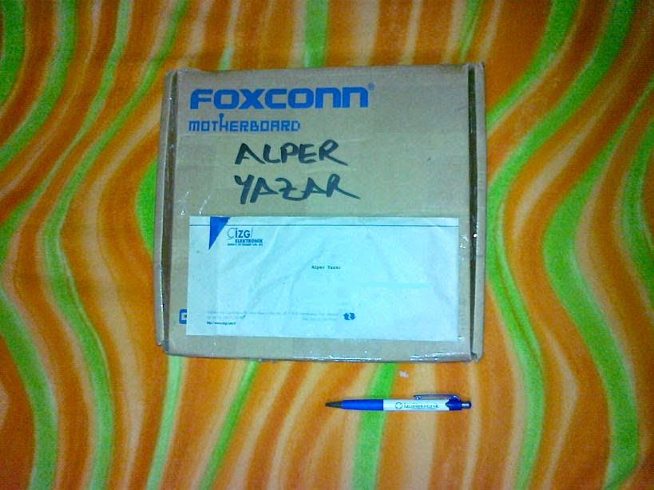
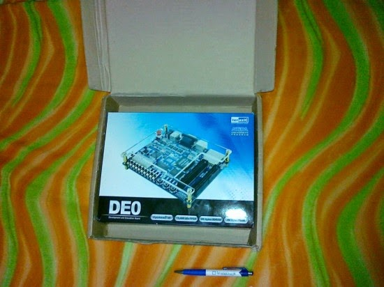
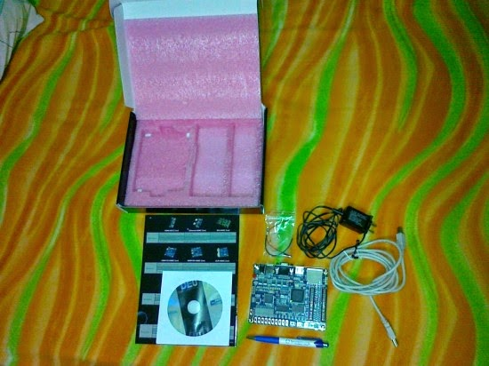
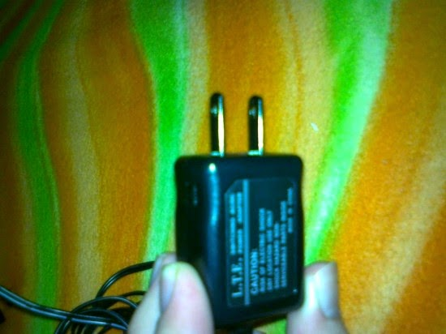
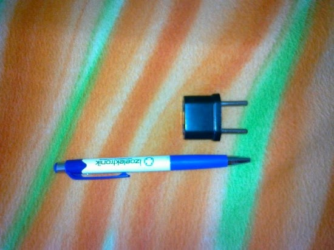
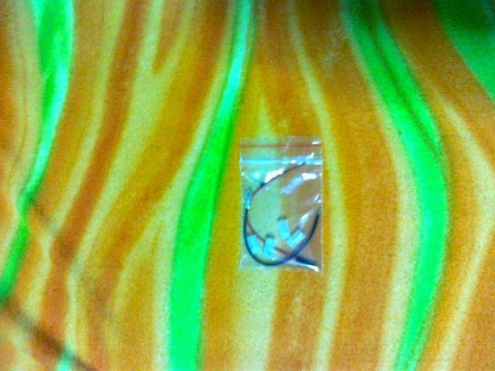
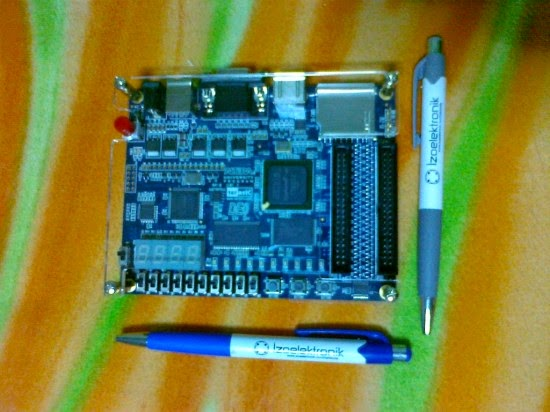

Altera DE0 FPGA Geliştirme Kiti
Elektronik malzemelerimin arasına en son katılan kartın adı Altera DE0. Kart, bir FPGA geliştirme kiti. terasIC tarafından üretilen kartın üzerinde yer alan donanımlar ise şu şekilde:
- 4 bit DAC bulunduran VGA portu
- PS/2 portu
- SD Kart soketi
- Eğer RS 232 bağlantısı yapmak isterseniz, bağlantı yapabileceğiniz noktalar (Yazının ilerleyen kısımlarında değineceğim.)
- FPGA’den dışarıya çıkış almak için tasarlanmış, 2 adet genişleme yuvası
- 4 Mb Flash
- 4 adet 7 segment display (Sayıların noktaları da var.)
- 10 adet açık/kapalı şeklinde düğme
- 3 adet bas-çek (yaylı) şeklinde düğme
- 8 Mb SDRAM
- Kartı açıp kapayabileceğini bir düğme
- Eğer 16 x 2 LCD ekran takmak isterseniz, bağlantı yapabiliceğiniz noktalar.
- Altera EPCS 4 konfigürasyon çipi
- 50 MHZ Osilatör
- Ve son olarak da Altera Cyclone III EP3C16F484 FPGA
bulunuyor.
Kartı Çizgi-TAGEM’in açmış olduğu Eğitim Market’ten akademik fiyat üzerinden aldım. Bir üniversitede öğrenci iseniz, akademik fiyattan yararlanmak için öğrenci kimliğinizi taratıp göndermeniz, ve küçük bir form doldurmanız yeterli oluyor. Çizgi-TAGEM’i bildiğim için çekincem olmadan internet üzerinden, kredi kartım ile sipariş verdim. Siparişim 2 veya 3 gün içinde elime ulaşmış oldu. Satış fiyatları dolar endeksli olduğu için ürünün ücreti değişiklik gösteriyor. Ben toplamda 193.92 TL ile kartı almış oldum. Eğitim Market üzerinden yaptığınız alışverişlerde ekstra bir kargo ücreti ödemiyorsunuz. Sonuç olarak kartı aldığım fiyat ile kart evime kadar gelmiş oldu.
Gelelim kargo ile gelen kutunun içeriğine.

Altera DE 0 siparişinde gelen kutu ve fatura
Kargo ile elime Foxconn’un ürettiği anakartlardan birisinin kutusu geldi. Çizgi Elektronik’in Foxconn ürünleri ile ilgisi olduğunu bildiğim için kutuya çok şaşırmasam da ürününün kutusunu görmeyi bekliyordum. Kartın yanında bir de ürünün faturası bulunuyor.
Oldukça sıkı bantlanmış anakart kutusunu açtığım zaman Altera DE0’ın kutusunu görmüş oldum.

Altera DE0 Kutusu
Altera DE0’ın kutusunu açtığınız zaman da pembe süngerlerle korunmuş ekipmanlar çıkıyor.

Altera DE 0 Kutu İçeriği
Bu ekipmanlar da:
- Altera DE0 kartı
- Gerekli yazılımları içeren bir DVD
- Ne amaçla konulduğunu çözemediğim, içinde iki adet kablo ve aksesuarlar içeren bir poşet
- Adaptör
- Bir ucunda B tipi USB portu olan USB kablosu
- terasIC’ın ürettiği diğer geliştirme kartları ve bu kartlara takılabilecek donanımları gösteren broşür
oluyor. Güzel noktalardan biri hem adaptörün hem de USB kablosunun oldukça uzun olması. Kutuyu açtıktan sonra “Bir çalıştırayım da yüklü gelen programı çalıştırıp, en azından LEDlerin yandığını bir göreyim.” dediğimde kötü bir sürprizle karşılaştım. Çıkan adaptör, fotoğrafta da görebileceğiniz gibi “Amerikan tipi” olarak nitelendirilen bir fiş yapısına sahip.

Altera DE 0 kutusu içinden çıkan Amerikan tipi adaptör
Bu yapıdaki bir adaptör maalesef evlerimizde kullandığımız prizlere girmiyor. Adaptörü evdeki prize uydurmak için bulduğum en yakın elektrikçiden aşağıdaki aparatı 2 TL’ye aldım.

Amerikan tipi fişi, evlerimizdeki prizlere uyduran ufak aparat
Satıcının böyle basit bir aparata 2 TL istemesi çok gelse de tercihim almak yönünde oldu. Adaptörün ucuna bu aparatı taktığınız zaman evlerimizdeki prizlere uyumlu hale gelen bir ucu oluyor. Tabii prize takmadan önce adaptörün giriş voltajını da kontrol etmeyi unutmadım. :) Sonuçta bu tip ucu olan bir cihaz 110 V için de tasarlanmış olabilirdi. Gerçi modern adaptörlerin çoğu SMPS yapısında olduğundan geniş bir giriş voltajı aralığına sahip olsa da kontrol etmekte fayda vardı. Tahmin ettiğim gibi, üzerinde yazan bilgilere göre adaptör 100 - 240 V arasında çalışabiliyormuş. Bu da evimizdeki prize güvenle takabileceğimizi gösteriyor.
Adaptörü takıp, kartı açtığınız zaman üzerindeki demo program çalışmaya başlıyor. Kart üzerindeki tüm LEDler yanıyor ve 4 adet 7 segment ekran da 0 dan 15’e kadar saymaya başlıyor. Ayrıca VGA portuna bir adet monitör bağlarsanız ekranda test görüntüsünü de görebilirsiniz.
Bu arada çıkan malzemelerin içinde ne amaçla konulduğunu anlamadığımı söylediğim bir poşetten söz etmiştim. Fotoğraf ile gösterecek olursam:

Kutu içerisinden çıkan, henüz çözemediğim aksesuarlar
Poşetin içerisinde uçları farklı olan bir siyah bir de kırmızı iki adet kısa kablo bulunuyor. Ayrıca PCB’ye lehimleyebileceğiniz iki adet pin ve dört adet de silikondan yapılmış gibi duran, kapak gibi bir “şey” bulunuyor. ( Her ne kadar amacını çözemesem de, fotoğraf çekerken “şey”lerin birini kaybetmeme üzüldüm. :( ) Ben henüz ne için konulduklarını algılayamasam da eğer sizin bir fikriniz varsa iletirseniz, memnun olurum. :)
Esas kartımız ise bana internetteki fotoğraflardan daha küçük geldi:

ALTERA DE 0 Kartı
Kart, öğrenmek açısından oldukça doyurucu donanımlar içeriyor. VGA portu kart üzerinde gelse de RS 232 için kablo takabileceğiniz bir port bulunmuyor. Bu portun bulunduğu en düşük kart Altera DE1. Fakat RS 232 portu bulunmamasına rağmen, RS 232 bağlantıları için yer bırakılmış durumda. Kart üzerinde de bu amaçla konulmuş ve FPGA’e bağlanmış bir çevirici entegre bulunuyor. Dolayısı ile Altera DE0’ın RS 232 yönünden Altera DE1’e göre eksiği, seri kabloyu direkt olarak takabileceğiniz bir port bulunmaması. Kart üzerinde belirtilmiş noktalardan bağlantı alarak RS 232 haberleştirme yapmanız mümkün. Dolayısı ile sırf RS 232 portundan dolayı Altera DE1 tercih etmeyi düşünüyorsanız, buna gerek yok. Aynı şekilde LCD ekran takabilmeniz için bağlantı noktaları bulunuyor. RS 232 olayını başka bir yazımda biraz daha detaylı anlatmayı düşünüyorum.
Kartın basit ama güzel yönünden biri üzerinde şeffaf, çıkarılabilir koruyucu bir plastik bulunması. Bu koruyucu, dışarıya açılan noktaları kapatmayacak şekilde tasarlanmış ve dışarı ile ilgili olmayan noktaların üzerini kapatıyor. Bir elektronikçinin masasının genelde kalabalık olduğunu düşünürsek olası dış etkilerden korumak adına güzel bir aksesuar olmuş. :) Eleştireceğim nokta ise koruyucu kısmın kart üzerinde bulunan 3 adet yaylı düğmenin, 2 tanesini biraz kapatıyor olması. Koruyucu kapak, 2 düğmeye basmanızı biraz zorlaştırıyor. Ayrıca RS 232 veya LCD bağlantısı için pin takmak isterseniz, muhtemelen bu koruyucuyu sökmek zorunda kalacaksınız. Çünkü koruyucu bu noktaların üzerini kapatıyor.
Kutudan çıkan DVD’de ise Altera’nın FPGA programlamak için çeşitli yazılımları bulunuyor. DVD ve sürücüleri konusuna ayrı bir yazıda girmeyi düşünüyorum. Fakat DVD’deki yazılımların kurulumlarının çok rahat olduğunu şimdiden söyleyebilirim.
Kartı henüz yeni edinmiş olsam da, bu yazımda edindiğim ilk izlenimleri paylaşmak istedim. Umarım FPGA kartı alma arifesinde olanlara yardımcı olabilmişimdir.